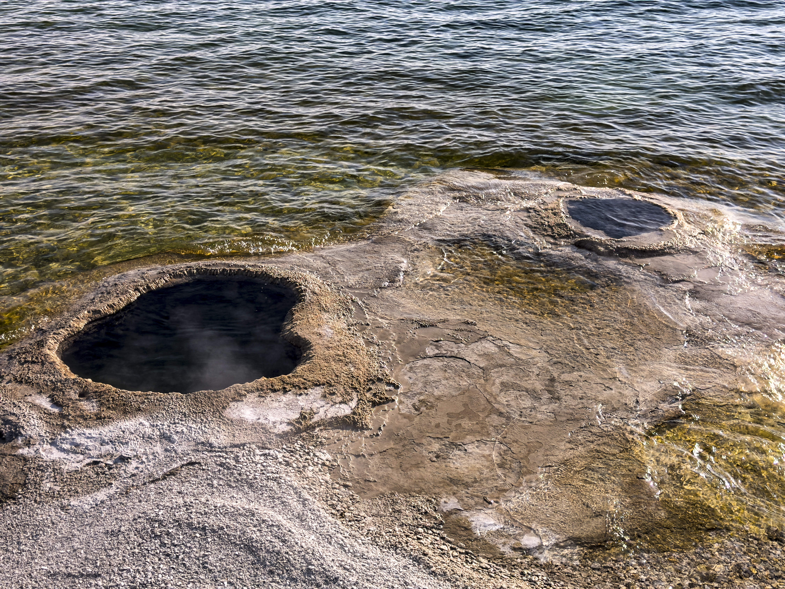
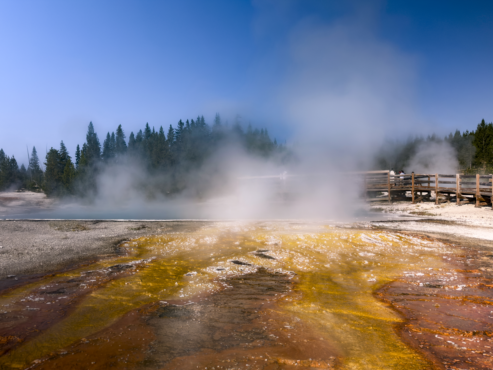
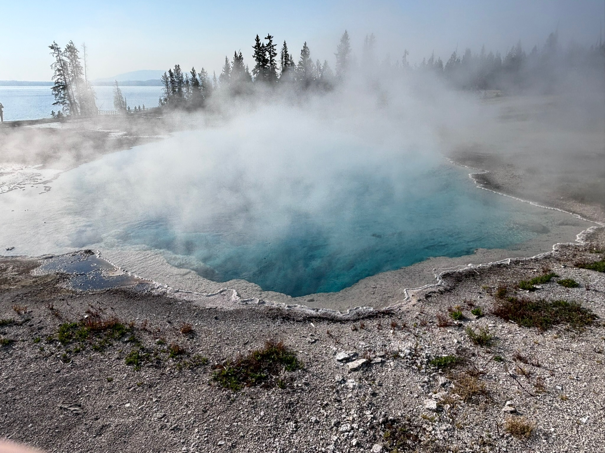
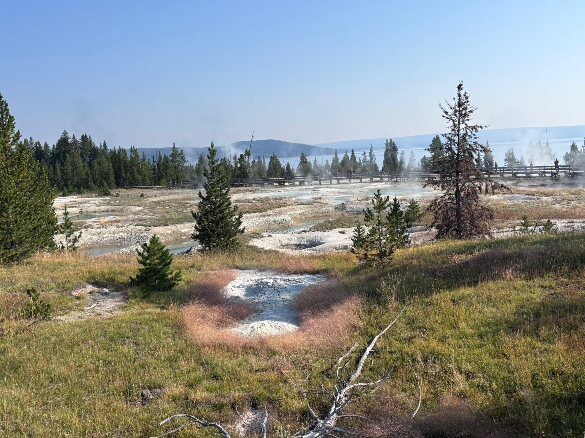
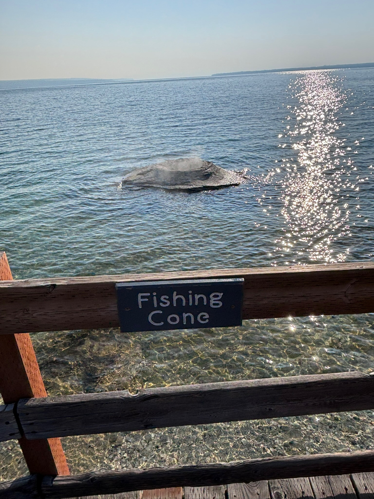

About West Thumb
Day 1 of the Yellowstone trip
West Thumb Geyser Basin is a collection of mudpots, springs, and inactive or unpredictable geysers located on the lower loop of Yellowstone's roads. The basin itself is located beside West Thumb lake, which has its own story, both visual and geothermal, to tell.
Gallery:
 These two vents, though they may seem separate, are actually part of the same feature: Lakeshore Geyser. In the winter, when the snow melts away, these two vents are known to be entirely submerged in water. |
 Pictured here is a hot spring, hidden by its own steam, caused either by air or water temperature, or both. The colorful brown, orange, and yellow are microscopic archaea and bacteria, which thrive in heat that would be deadly to us. |
 Pictured above are the deep blue waters of Yellowstone's Black Pool. Though the name is misleading, it was once true; the spring used to be far colder, allowing dark-colored bacteria to thrive. Nowadays, suspended particulets give it this blue color. |
 A view of the West Thumb Geyser Basin, with West Thumb lake in the background. West Thumb lake is actually much deeper than most of its neighboring body of water, at about 320 feet deep. This is due to West Thumb itself being its own small caldera. |

Though a bit less visually interesting than the other features, this geyser is a fair bit further
out than the others, and the story of its name is as strange as it is obvious: Fishermen used to dip
fish into the geyser's mouth to boil them on the hook.
Nowadays, that's illegal.